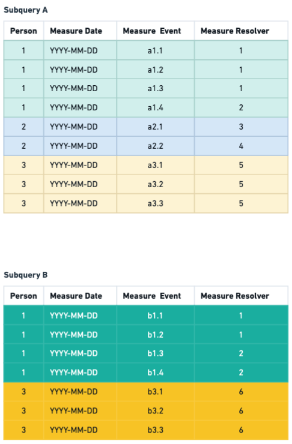
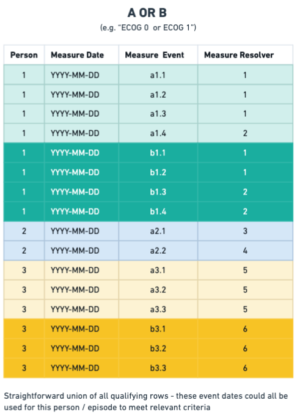

Measure Resolution¶
MeasureMember - atomic unit of result¶
When a measure is executed, it produces a sequence of:
@dataclass(frozen=True)
class MeasureMember:
person_id: int
measure_resolver: int
episode_id: Optional[int]
measure_date: Optional[date]
A MeasureMember represents a specific person qualifying for a measure at a specific time, for a specific resolver.
It is not only the fact of membership, because it includes resolution to a time-stamped qualification event. This distinction is critical for reporting, which requires flexible time-windowing periods to produce trends and per-period analysis.
Measure Combination Semantics¶
Measures use RuleCombination to compose child measures via OR or AND, and the handling of these semantics is significantly different when composing from lower levels.

OR Logic: Union of qualifying events¶

OR logic preserves all qualifying rows.
Implementation:
- Each child measure emits rows
- Rows are combined using
UNION ALL - Multiple qualification dates are preserved.
- No resolver alignment is required.
- Events bubble upward unchanged.
Example:
- Measure = ECOG 0 OR ECOG 1
If a person has:
- ECOG 0 on Jan 1
- ECOG 1 on Mar 1
Result: Two MeasureMember rows, with both dates preserved
AND Logic: Resolver-Aligned Intersection¶

AND logic is not simply “person appears in both”. It requires that the same resolver must satisfy all child criteria.
Implementation:
- Each child measure emits canonical rows.
- Children are joined on measure_resolver.
- Resolver alignment is required.
- Qualification date shifts forward to the last satisfied condition.
- If resolvers differ, the row is excluded.
- Qualification date becomes:
greatest(child_1_date, child_2_date, ...)
This represents the earliest moment at which all criteria are true.
Example:
- Measure = Stage III AND Radiotherapy
If a person has:
- Stage III on Jan 1 (episode 10)
- Radiotherapy on Feb 15 (episode 10)
Result: One row, qualification date = Feb 15
If RT occurred under episode 20 instead, there is no result (resolvers do not align)
Nested Measures¶
Measures can be nested arbitrarily:
A AND (B OR C)
Evaluation proceeds bottom-up:
- B OR C → union of events
- A → events
- AND joins A with (B OR C) on resolver
- Qualification date = greatest of aligned dates
The canonical shape is preserved at every level.